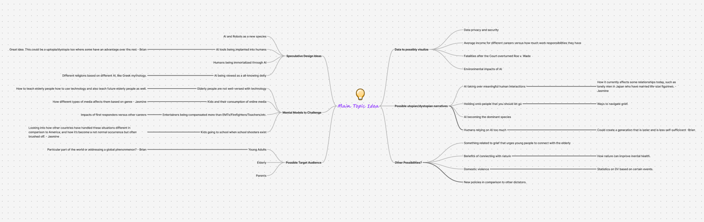

My topic was on privacy, and my target audience was young adults who are used to personalized experiences that rely on their data. My goal was to inform them on laws regarding privacy by highlighting current policies and how a possible future can impact how their data is protected.
The features I initially envisioned for my project were a way to assess the strength of your password compared to others' and to evaluate your data protection level with others. However, my vision shifted from cybersecurity to privacy laws after researching and understanding what laws exist regarding citizens' privacy, and to what extent their privacy is protected. This led me to create a possible future where your data is monetized and how choices related to that can impact your privacy.
